2024年最初の山歩きは途中で引き返しました。
2024/01/03
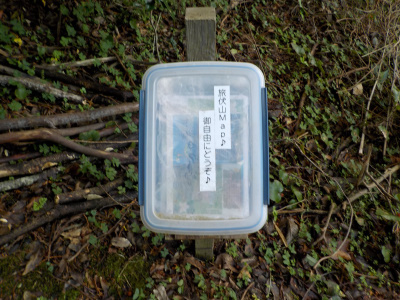
旅伏山登山口にタッパーがあり、中に地図が入っていました。
ありがたいです。
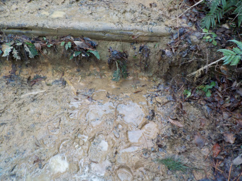
登っていくと階段がぬかるんでいて、滑って危険でした。
上まで登りたい気持ちもありましたが、無理して転んでもいけないので引き返しました。
また今度晴れた日に登ろうと思います。
島根県出雲市国富町
2024/01/03

旅伏山登山口にタッパーがあり、中に地図が入っていました。
ありがたいです。

登っていくと階段がぬかるんでいて、滑って危険でした。
上まで登りたい気持ちもありましたが、無理して転んでもいけないので引き返しました。
また今度晴れた日に登ろうと思います。
2020/04/19
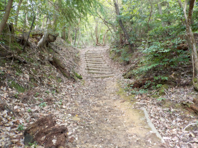
山はまだ寒いみたいで、草が少なめでした。
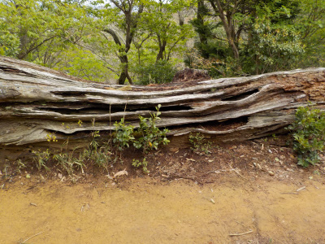
久しぶりの登ったので、とっても疲れやすかったです。
休憩所で休みました。
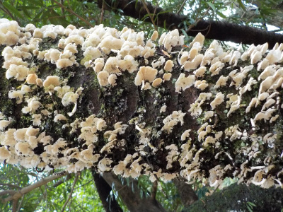
都武自神社の桜の木にキノコが沢山生えていました。
この枝は枯れちゃうんだろうな。
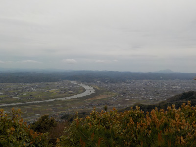
山頂からの眺めです。
天気悪くて暗いですが、遠くの山まで見えました。
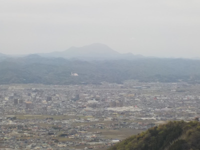
三瓶山も見えました。
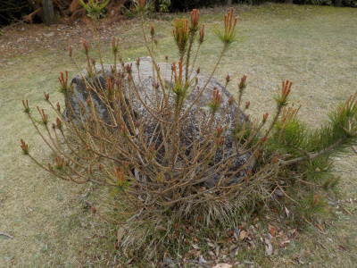
山頂の松です。
枝がいっぱい出ててなんか恰好いいですね。
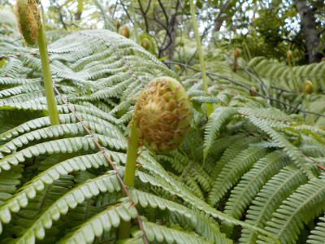
シダの芽が沢山出てました。
もうちょっとしたら、そこらじゅうに生い茂るんでしょうね。
今日は涼しかったので登りやすかったです。今ぐらいの時期が一番快適に登れるかなーって思いました。
2018/06/16
天気が良かったので山登りです。
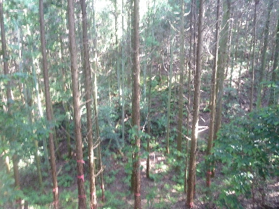
山の中は土臭いなー。
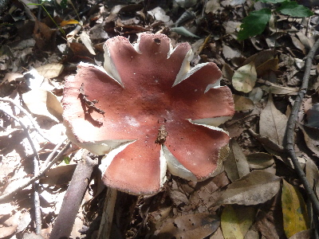
大きいキノコが生えてました。こうゆう変ったものが見れるのっていいですね。
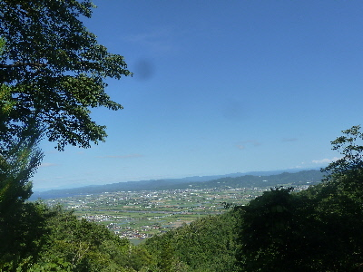
疲れたので休憩所で休憩です。
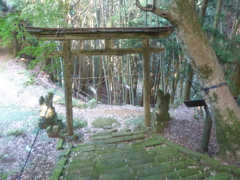
都武自神社の鳥居が倒れそうになっていました。
今、黒い紐で吊ってあります。倒れないで欲しいですね。
（去年の紐で吊ってありました。）
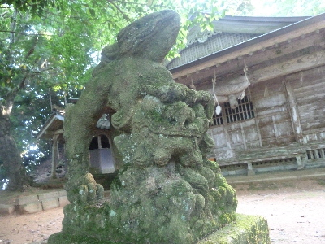
狛犬も神社も歴史を感じさせますね。このままの渋い感じが続くといいのにな。
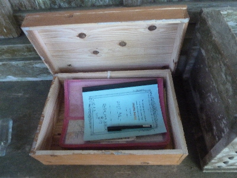
神社に記帳するノートがありました。
今回は書きませんでしたが、次は何か書こうかな。
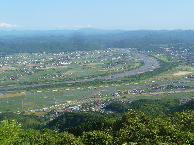
山頂でいい眺めを見ながら休憩しました。
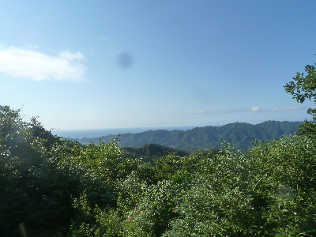
カメラで撮ると遠くの風車は小さいので消えちゃうんですね。
高級なカメラで撮影すると写るのかな？
2017/07/02
雨が多い時期ですが、旅伏山は道がいいので登れるかな？と思って行きました。
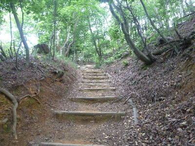
道は乾いてて登り易そうです。
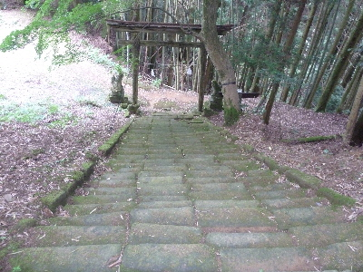
でも湿気っているので、神社の階段は苔が全体的に生えていました。
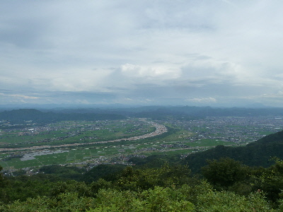
山頂からの眺めです。
くもり空でどんよりです。
斐伊川は意外と水が少なかったです。
今日は鹿が見れました。
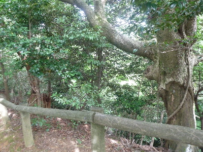
尾根で両脇に柵がある場所で、目の前を鹿が凄いスピードで横切りました。
突然だったのでびっくりしました。
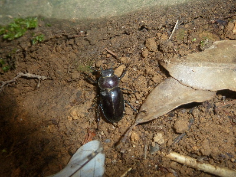
クワガタムシのメスが道を歩いていました。
何クワガタかな？
ちょっと大きいのでコクワガタではなさそうです。
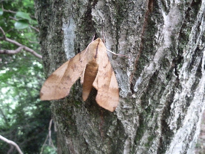
どこにでもいそうな蛾ですが、山にいると雰囲気があっていいですね。
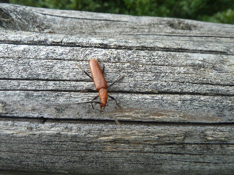
カミキリムシもいました。
これもなんて名前かわかりません。
ネット図鑑で見てもよくわかりませんでした。昆虫は難しいですね。
2017/05/27
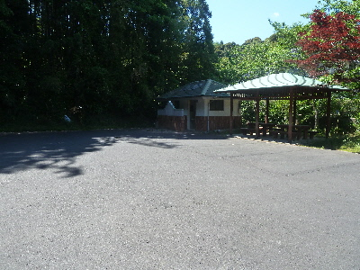
ここの駐車場はトイレ付です。
上から見るとこんな場所です。
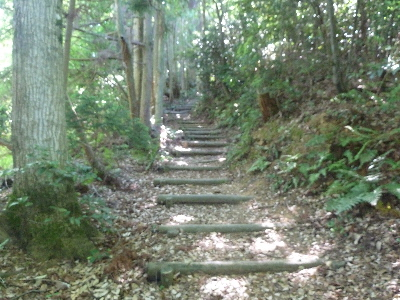
道幅が広いので登り易いです。
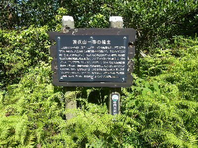
親切な案内板が数か所あり、いい勉強になりました。
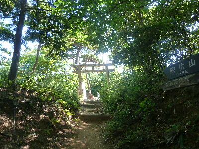
木でできた鳥居が渋かったです。雰囲気があって格好がいいです。
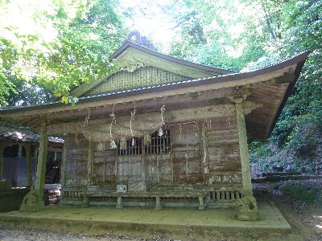
山頂近くに都武自神社（つむじじんじゃ）があります。これも渋いな。
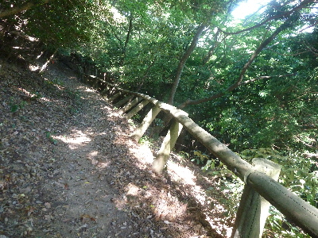
途中柵が傾いて落ちそうになっていました。道のヘリは気をつけて歩かないといけませんね。
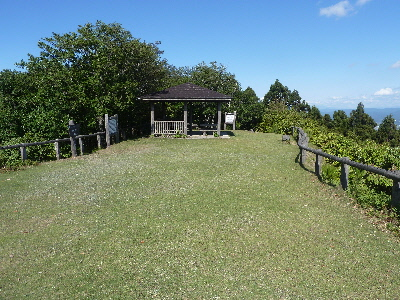
展望台はとっても綺麗いでした。山の上とは思えないです。
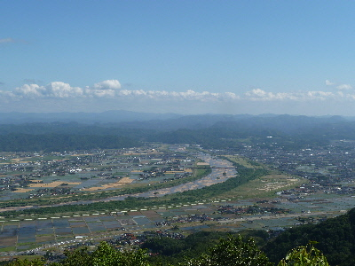
斐伊川の眺めです。川が太いな。
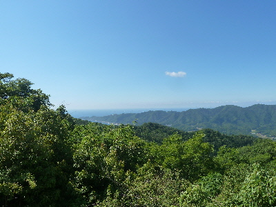
こっちは北側の日本海方向です。いい眺めです。
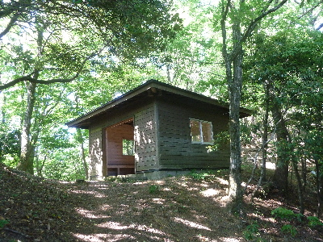
GPSをチェックしてみたら、展望台は山頂じゃなかったです。
山頂はこの小屋の奥です。
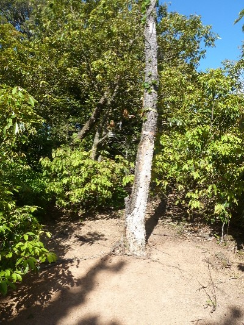
ここらへんが山頂です。
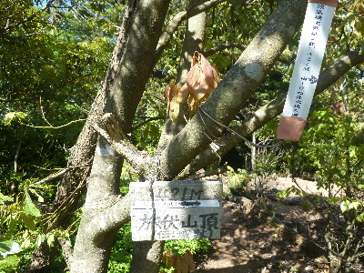
親切な方が看板を設置されていました。ありがたいです。
山に登ったら山頂に行きたいですよね。
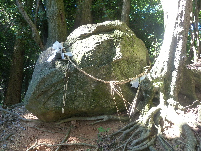
案内板に帆筵石（ほむろいし）が近くにあるとあったので寄りました。
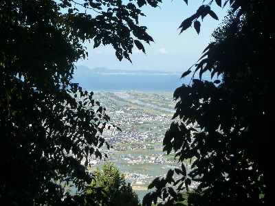
帰り道を歩いていると宍道湖がみえました。
冬になって葉が落ちたら、もっと綺麗に見えるんでしょうね。
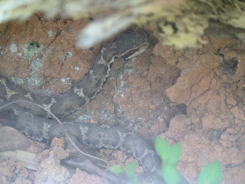
マムシに遭遇しました。山道は気をつけましょう。
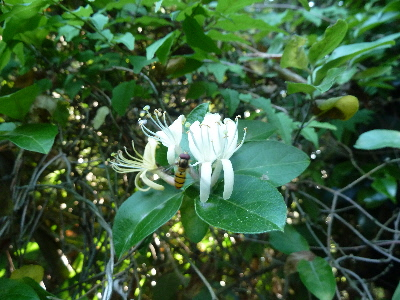
駐車場に花が咲いていました。
スイカズラかな？